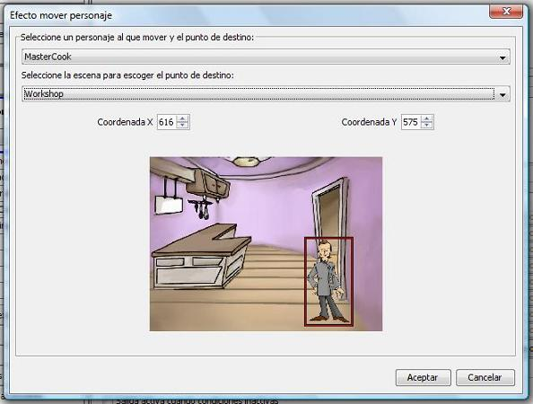

Through this effect we will be able to move the selected character to the selected position.
Create a move character effect:

In the first place we can move the selected character. Afterwards we can select a scene from the chapter. As with other effects, the selection of the scene has the only purpose of preview, because the effect does not need to be related to the scene shown.
The movement of the character will be executed in the scene where this effect is triggered. Once you have chosen the scene, you choose the position that the character will move, either filling in the X and Y coordinates or by clicking on the chosen position on the stage